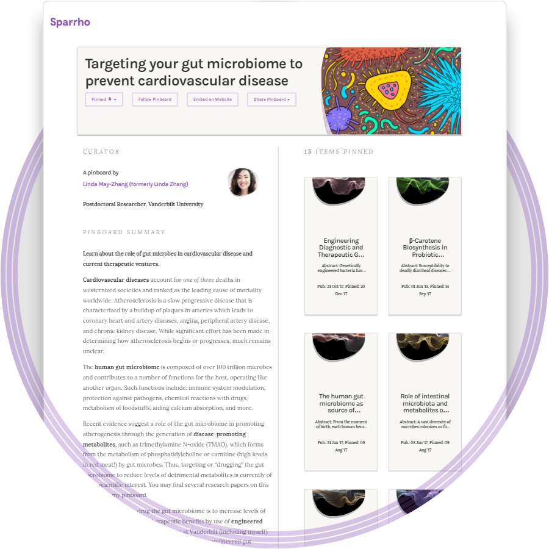
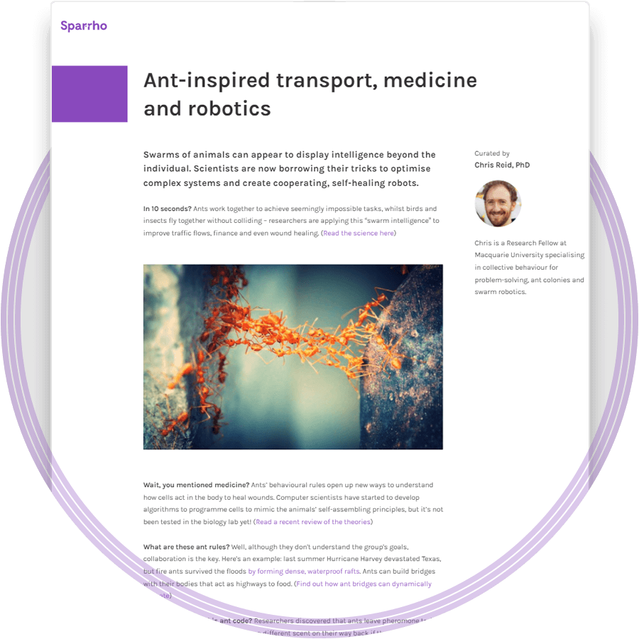

“I love science but…
I’ve got too many ideas to juggle.”
I just want to organise my thoughts so I don't forget my best ideas! ↴
Nobody really gets what I’m doing.”
I want to improve the clarity of my science writing for a wider audience. ↴
I need a career upgrade.”
I want more employers to see my ability and potential. ↴
Can we help take your research to the next level?
For those of you whose minds never stop:
Got too many ideas to juggle?
“Science is simply the word we use to describe a method of organising our curiosity.” — Tim Minchin, 2013
Create unlimited Sparrho pinboards to visually organise your research ideas and progress:
- Easily search from 60,000,000+ latest papers and patents
- Save the search if you want alerts for new publications
- Pin your favourite papers and patents to your pinboards
- Add a description to remind yourself why those items belong together
- Invite collaborators to view or add to your pinboard
- And if you’d like, publish your pinboard for Sparrho's science-curious readers in 150+ countries, ranging from high school students to potential employers

For those of you who care deeply about how knowledge is shared:
Want to get through to a wider audience?
“Everything must be made as simple as possible. But not simpler.” — Albert Einstein, paraphrased, 1933
Free 1-on-1 writing coaching with Endre, our Senior Editor with a background in high-integrity journalism:
- Tell us what research you’d like to write about
- Decide with Endre on the newshook and framework for your story
- Send us a first draft and references in a pinboard
- Refine your story with Endre’s feedback
- Get featured in our 3-minute digests newsletter, sent weekly to thousands of subscribers across academia and industry

For those of you who have so much more to give:
Want to impress for your dream job?
“I believe that a scientist looking at nonscientific problems is just as dumb as the next guy.” — Richard P. Feynman, 1955
Build a professional scientific portfolio to show the clarity and rigour of your thinking to employers in any sector:
- Pick a Sparrho username for your profile URL
- Write a one-liner to describe your professional interests
- Create pinboards to show off the breadth and depth of your scientific knowledge
- Level up your writing with Endre, our Senior Editor
- Enrich your profile with other professional details
- Get noticed by our global community of R&D professionals, investors, IP lawyers, policymakers, publishers, specialist headhunters, and more
Now, of course we know that all scientists are really overachievers…
So we’ve been busy putting together a whole suite of ways to fast-track your careers, which we’ve code-named Operation Sparrho Heroes.
Yep, you’ve guessed it — you’re the Heroes here! Click on any of the following to find out more:
Researcher prize
Presenting at a science conference in the next 12 months?
We award £500 each to the researcher with the best pinboards every month.
Applicants welcome from all countries.
Guest blogging
Have something to say about science or tech?
Want to drive international exposure for your own writing?
Discuss your ideas with our editorial team — new and experienced writers welcome.
Consulting projects
Looking for paid projects to expand your commercial consulting skills?
If your expertise matches our client’s needs, our team will train you to deliver the project — experience not essential.
Projects have included due diligence research, literature review and market landscaping.
Still want more?
If there’s one thing that we can all agree on, it’s that us scientists (and programmers) have an infinite appetite for learning.
So we thought we’d share with you some of the most interesting things we’ve recently read. Enjoy!